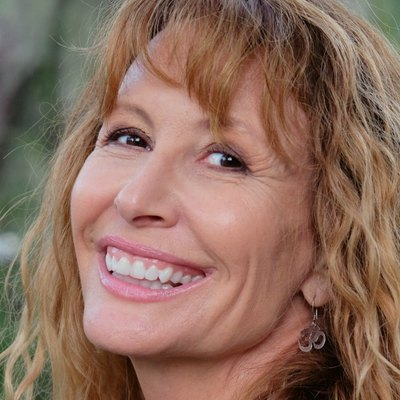

¿Alguna vez se te pasó un regalo?
Regalar suele tener dificultades y se siente como un “cacho”.
54%compró el regalo del Día de la Madre con menos de una semana de anticipación.
+50%ya tuvo problemas con un despacho.
Logisfashion 2026 · CNC 2025

Marcela, 58
La que quiere, pero no alcanza“Me encanta regalar cosas bonitas, pero siempre me pilla el tiempo.”
Se le olvida:lo que vio y dónde

Andrés, 52
El que delega“Yo pongo la plata, pero que lo vea otro.”
Se le olvida:que la fecha se acerca

Felipe, 34
Se le pasa la fecha“Es hoy y no tengo nada, ¿qué hago?”
Se le olvida:la fecha
Lo que los une:
“Necesito que alguien me ayude con esto, y que no sea una carga.”
Creado ya resuelve
- 01La identidad chilena
- 02La rapidezExpress, para regalo
Lo que falta
Un sistema inteligente que te ayude y guíe al regalar, y te facilite planificar.
→
De regalar al último minuto
a regalar con ayuda y a tiempo.
Un asistente que planifica
tus regalos del año.
01
Se acuerda
Sabe a quién le regalas, cuándo y qué le gusta, y lo aprende con cada regalo.
02
Te propone
Llega a tiempo con el regalo listo, para que no salgas a buscar.
03
Se adapta
Si te importa más, te muestra 3 opciones; si no, elige solo y te avisa.
Por qué le sirve a Creado
Más compras en la webCompra recurrenteCompra anticipada.
1/12